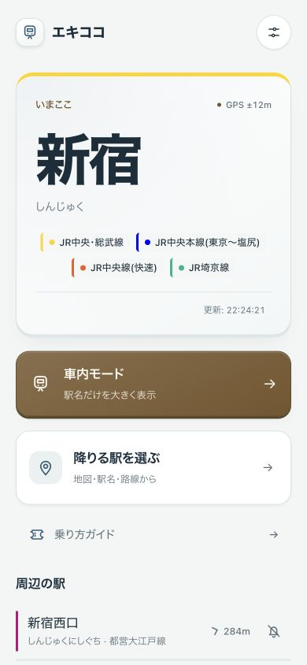
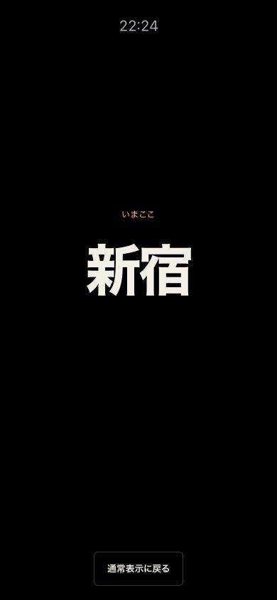
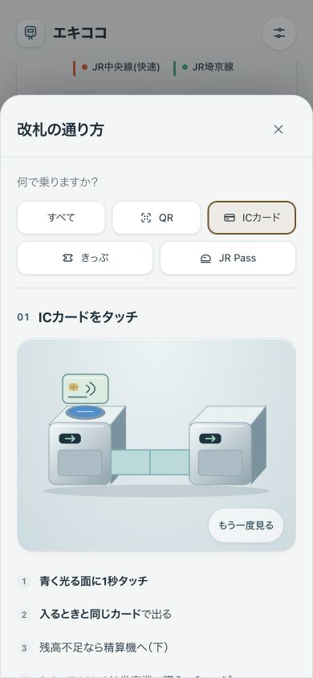

電車の中の、小さな安心。
「今どこ？」を、手元で。
扉上の表示が見えない。
アナウンスを聞き逃した。
そんなとき、近くの駅をスマホで確認。

駅名から、迷わず読める。画面は実際のアプリを撮影。
新宿の表示はサンプルです。
GPSをもとに近くの駅を表示
駅名を大きくする車内モード
改札の通り方を動く図で確認
見たい情報に、ちょうどいい表示。
いつもの画面。
駅名に集中する画面。
駅名、路線、その距離。
必要な情報をひと目で。
現在地に近い駅を、読みやすい大きさで表示。駅から離れているときは「最寄り駅」と距離を表示します。
- 周辺の駅もまとめて確認
- ライト／ダークと配色を選べる
- 日本語／英語を切り替えられる
表示はGPSによる推定です。地下・トンネル内など、位置情報を取得しにくい場所では更新できないことがあります。

手元で一瞬、
駅名を確かめたいときに。
通常画面の「車内モード」を押すと、黒背景の大きな駅名表示へ。戻るボタンで、いつもの画面に戻れます。
- 駅名を中心にしたシンプルな画面
- 最寄り駅を示すときは距離も表示
- 車内モードは基本機能として利用可能
位置情報の取得状況は通常表示と共通です。列車の運行情報と連動した案内ではありません。
駅に着いてからも。
改札の前の迷いを、
動く図でほどく。
カードをタッチする場所や、きっぷを入れる位置。文字だけでは分かりにくい手順を、短いアニメーションで確認できます。
精算や乗り換えの基本も収録。必要なところだけ、繰り返して見られます。
アプリを開いてガイドを見る →ガイドは一般的な手順です。対応する改札や乗車券は、駅の表示に従ってください。

いま、使える機能。
まずは駅を確認。
必要なら、もうひとつ便利に。
エキココはベータ版です。基本機能と、試せる追加機能を分けて案内しています。
基本機能 登録不要
- 近くの駅・路線・距離の表示
- 駅名を大きく表示する車内モード
- 乗り方ガイド・表示設定
アプリを開き、位置情報を許可すると、駅の確認を始められます。
EKIKOKO Plus 現在はデモ
- 目的地の駅検索・地図での確認
- 設定した駅に近づいたときの降車アラート
- 移動方向を使った次の駅の予測
- 乗車履歴・路線による絞り込み
現在の公開版は、料金の請求がないデモです。
アプリ内の「EKIKOKO Plus」から有効にして試せます。目的地の検索・設定と降車アラートにはPlusが必要です。
次駅は運行情報ではなく推定です。降車アラートは位置情報の更新が前提となり、画面ロック中やバックグラウンドでの通知は保証されません。車内の表示・放送もあわせて確認してください。
インストールなしで、まず一度。
開いて、許可して、
駅を見る。
気に入ったら、ブラウザのメニューからホーム画面へ。次からすぐに開けます。
アプリを開く
「現在地を確認する」をタップ。アカウント登録は不要です。
位置情報を許可する
現在地をもとに、近くの駅を判定します。許可しない場合は、現在地からの駅表示を利用できません。
駅名を確認する
大きく見たいときは「車内モード」へ。乗り方ガイドも利用できます。目的地を探すときは、Plusのデモを有効にしてください。
使う前に、知っておきたいこと。
全国どこでも使えますか？
首都圏・関西はアプリに内蔵した駅データを使用します。それ以外の地域ではオンラインで周辺の駅データを取得するため、通信やデータの状況に左右されます。Plusの目的地検索は全国の駅が対象です。
地下鉄やトンネルでも駅が分かりますか？
GPSが取得できない場所では、駅の更新が止まったり、表示が実際の位置とずれたりすることがあります。列車の運行システムとは接続していないため、車内の表示・放送も確認してください。
位置情報や乗車履歴は保存されますか？
正確な座標を運営者のサーバーへ送信・保存しません。内蔵データの圏外では、駅データ取得のため約1km単位に丸めた座標を外部サービスへ送信します。Plusの乗車履歴や目的地・設定は端末内に保存され、アプリの「データ削除」で消せます。詳しくはプライバシーポリシーをご覧ください。
閉じていても、降りる前に通知されますか？
常時通知を保証する仕組みではありません。降車アラートは、アプリが位置情報を更新できる間に動作します。通知・音・振動の可否は端末やブラウザ、許可設定にも依存します。
次の移動で、
手元にエキココを。
近くの駅を確認する、小さな道具。登録不要で始められます。